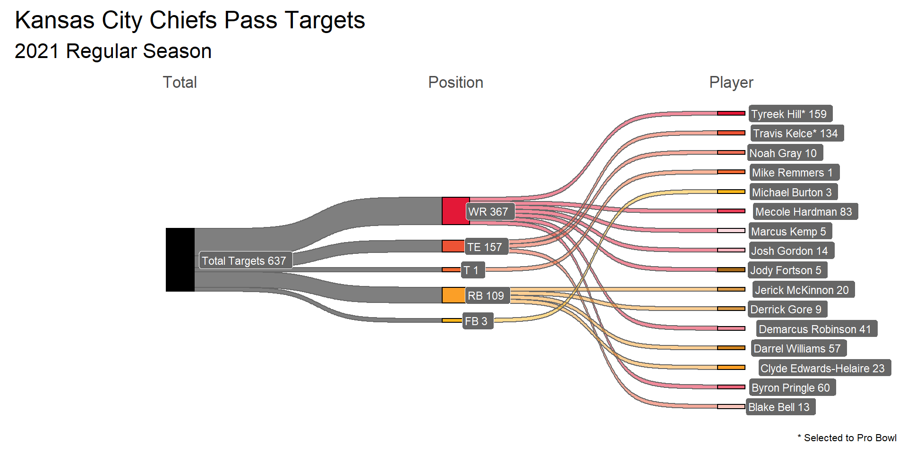

#read in data (had to split download into two parts due to website limitations)
targets_2021 <- read_excel("chiefs_targets_2021.xlsx")ggplot2
link to data source: https://www.pro-football-reference.com/teams/kan/2021_advanced.htm#advanced_receiving
helpful links:
https://rpubs.com/techanswers88/sankey-with-own-data-in-ggplot
https://r-charts.com/color-palette-generator/
# A tibble: 6 x 22
No. Player Age Pos G GS Tgt Rec Yds TD `1D` YBC
<dbl> <chr> <dbl> <chr> <dbl> <dbl> <dbl> <dbl> <dbl> <dbl> <dbl> <dbl>
1 10 Tyreek Hill* 27 WR 17 16 159 111 1239 9 75 795
2 87 Travis Kelc~ 32 TE 16 16 134 92 1125 9 63 561
3 17 Mecole Hard~ 23 WR 17 8 83 59 693 2 33 191
4 31 Darrel Will~ 26 RB 17 7 57 47 452 2 19 17
5 13 Byron Pring~ 28 WR 17 5 60 42 568 5 32 381
6 11 Demarcus Ro~ 27 WR 17 10 41 25 264 3 13 202
# ... with 10 more variables: `YBC/R` <dbl>, YAC <dbl>, `YAC/R` <dbl>,
# ADOT <dbl>, BrkTkl <dbl>, `Rec/Br` <dbl>, Drop <dbl>, `Drop%` <dbl>,
# Int <dbl>, Rat <dbl>#sankey diagram targets(total) > target position > player
pl <- ggplot(dfd, aes(x = x
, next_x = next_x
, node = node
, next_node = next_node
, fill = factor(node)
, label = paste0(node," ", n)
)
)
pl <- pl +geom_sankey(flow.alpha = 0.5, color = "gray40", show.legend = TRUE, node.color =1)
pl <- pl +geom_sankey_label(size = 3, color = "white", fill= "gray40", hjust = -0.2)
pl <- pl + theme_sankey(base_size = 16)
pl <- pl + theme(legend.position = "none")
pl <- pl + theme(axis.title = element_blank()
, axis.text.y = element_blank()
, axis.ticks = element_blank()
, panel.grid = element_blank()
, panel.spacing.x=unit(-10, "lines")
, plot.caption = element_text(size = 8)
)
#move x axis labels to top
pl <- pl + scale_x_discrete(position = "top")
#set custom colors for each node
pl <- pl + scale_fill_manual(values = c(
'Total Targets' = '#000000',
'WR' = '#e31837',
'TE' = '#ec5335',
'T' = '#f16a32',
'FB' = '#FFB81C',
'RB' = "#fb9f27",
#WR
'Tyreek Hill*' = '#e31837',
"Mecole Hardman" = "#e83f58",
"Byron Pringle" = "#ec657a",
"Demarcus Robinson" = "#f18c9b",
"Josh Gordon" = "#f6b2bc",
"Marcus Kemp" = "#fad9de",
#TE
'Travis Kelce*' ="#ec5335",
'Noah Gray' = "#ef7057",
"Jody Fortson" = "#a76a1a",
"Blake Bell" = "#f9c6bc",
#T
'Mike Remmers' = "#f16a32",
#RB
"Clyde Edwards-Helaire" = "#fb9f27",
"Darrel Williams" = "#d18521",
"Jerick McKinnon" = "#d99946",
"Derrick Gore" = "#d99946",
#FB
"Michael Burton" = "#FFB81C"
))
#titles and labels
pl <- pl + labs(title = "Kansas City Chiefs Pass Targets")
pl <- pl + labs(subtitle = "2021 Regular Season")
pl <- pl + labs(caption = "* Selected to Pro Bowl") #caption from data source
pl <- pl + labs(fill = 'Nodes')print(pl)
Notes:
I would like to have been able to sort the players by number of targets, but I was unable to find a way to do so that worked with the ggsankey package; this seems to be a known issue, see https://github.com/davidsjoberg/ggsankey/issues/7